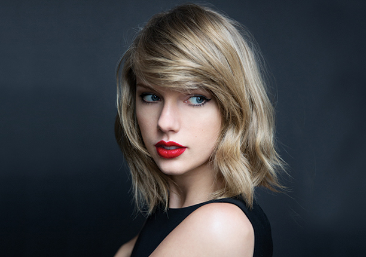
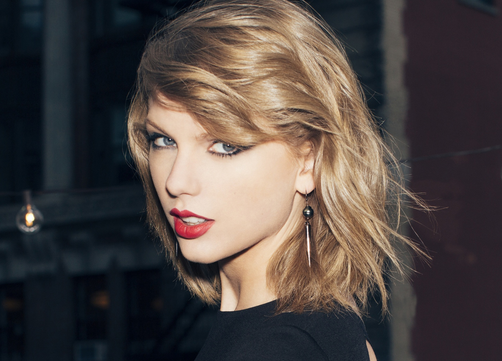
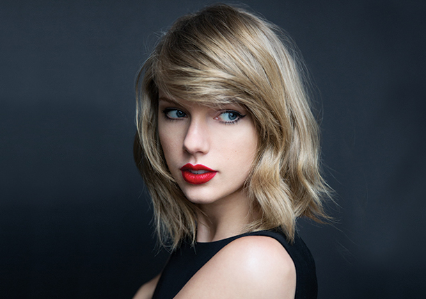
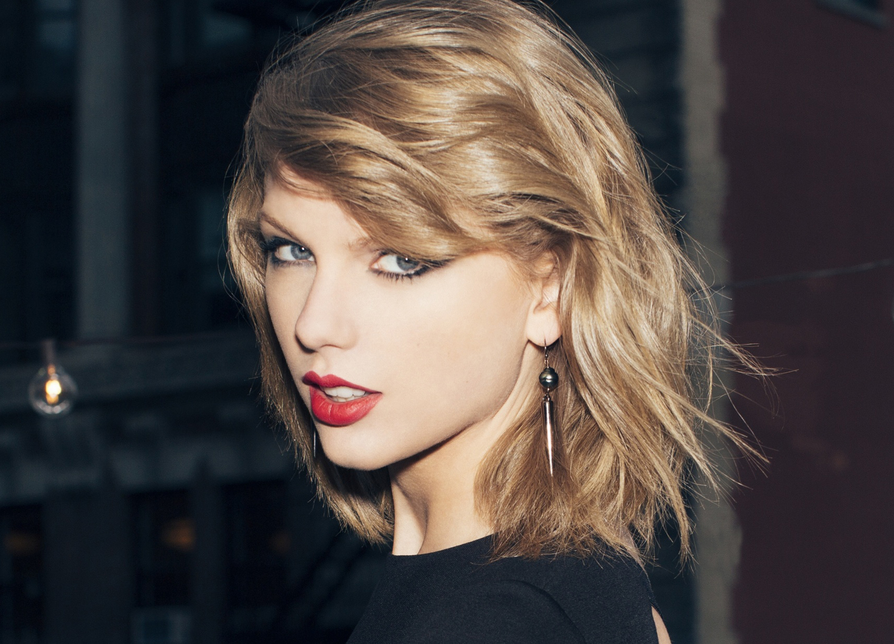
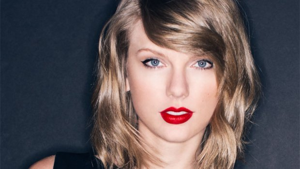

NEXT INTERVIEW
- Jennifer Lawrence
- Prince William
- Justin Biber
- Ellen
- Adele
- Amanda Seyfried
MIN'S DAILY
INTERVIEW
Taylor Swift: 'My Confidence Is Easy To Shake'
NPR.org
 



GUY RAZ: You quote the poet Pablo Neruda right on the first page of the liner notes. The line is, "Love is so short, forgetting is o long." And it seems like that line sort of sets the theme for this record.
TAYLOR SWIFT: It really does. When I read that line, I absolutely connected to it. I felt like my favorite writers have almost musical hooks in their work, whether it's poetry or a hook at the end of a chapter that makes you want to read the next one. And I think that my favorite writers definitely have something musical about what they do, in saying something so relatable and universal and so simple.
You write the vast majority of your songs, and a lot of your themes are about love or love lost and heartbreak. I sometimes wonder whether you date a lot of jerks.
[Laughs.] I've written all my songs on every single one of my records, and that's what's been fun about looking back. My first album is the diary of when I was 14, 15, 16. My second album, Fearless, was from 16 to 18, and so on, and so on. So you have my life being recorded in journal entries from these two-year periods of my life since I was 16. I like to write about love and love lost because I feel like there are so many different subcategories of emotions that you can possibly delve into. I've never missed two people the same way — it's always different for me. I've never fallen in love with someone and had the same exact kind of feeling come over me. So I think that there are all these different mixtures of emotions that go into individual feelings that you feel for individual people. And, yeah, most of the time it doesn't work out.
Is there a line that you won't cross when it comes to writing about how you feel?
I don't think that I've ever experienced that line before.
So it's really you speaking in your lyrics?
Yeah. I've always written songs the same way. You learn different tricks — you learn craft, you learn structure, all that — as you go. Since I was 12, I would get an idea, and that idea is either a fragment of melody and lyric mixed in, [or] maybe it's a hook. Maybe it's the first line of a song. Maybe it's a background vocal part or something, but it's like the first piece of a puzzle. And my job in writing the song and completing it is filling in all the rest of the pieces and figuring out where they go. The reason why I keep doing it is because it's like a message in a bottle. You can put this message in a bottle, throw it out into the ocean, and maybe someday, the person that you wrote that song about is going to hear it and understand exactly how you felt. I think that's what keeps drawing me to songwriting: the spontaneity of how you can get an idea at 4 in the morning or while walking through the airport, and also the fact that it's conveying a message to someone that's more real than what you had the courage to say in person.
In the liner notes, some of the letters in the lyrics are capitalized, and your fans know what that's about. These are clues for them to kind of piece things together. Do you see your lyrics as a way for you to directly communicate with your fans?
The first thing that I think about when I'm writing my lyrics is directly communicating with the person the song is about. I think what I've learned recently is that it's not ... heartbreak that inspires my songs. It's not love that inspires my songs. It's individual people that come into my life. I've had relationships with people that were really substantial and meant a lot to me, but I couldn't write a song about that person for some reason. Then again, you'll meet someone that comes into your life for two weeks and you write an entire record about them. When I first started writing songs, I was always scared that my songs were too personal — like, if I put someone's name in a song, people won't relate to it as much. But what I saw happening was, if I let my fans into my life and my feelings and what I'm going through — my vulnerabilities, my fears, my insecurities — it turns out they have all those things, too, and it kind of connects us.
A lot of people know you were a talented singer as a kid, but you actually experienced setbacks for many years before you made it, right?
I started out with community theater, like local theater. I loved being on stage. I loved telling a story through words and music. I actually ended up going to auditions in New York for Broadway stuff. I didn't make it there. What I ended up coming back to is, I always was just so obsessed with the storytelling in country music. Shania Twain, Faith Hill, The Dixie Chicks — I was so taken in by their songs. So I started singing their songs at karaoke contests and singing every single weekend at something, trying out singing the national anthem here or there. When I was 12, I started playing guitar and writing my own songs, and that's when it became something I could never stop thinking about. It went into overdrive. I was always singing at some coffeehouse or some singer-songwriter night or this festival or that festival.It just became everything to me when I was about 12, and that's when I started really pressuring my parents to move to Nashville.
What motivated you? Were you just convinced you were going to make it?
No, actually. I was never convinced I was going to make it. And I look back — my mom and I reminisce about this all the time because we had no idea what we were doing. My parents bought books on what the music industry was like. They had no idea what the music industry entailed and what was involved with it. [Something that was] said to me early on was, "Teenagers don't listen to country music. That's not the audience. The audience is a 35-year-old housewife. ... How are you going to relate to those women when you're 16 years old? You should come back when you're in your 20s." And I kept thinking, "But I love country music, and I'm a teenager! There have to be more kids out there like me."
How do you deal with setbacks now? A few years ago, you were criticized by a few critics for a performance at the Grammy Awards. Did that shake your confidence?
Absolutely. My confidence is easy to shake. I am very well aware of all of my flaws. I am aware of all the insecurities that I have. I have a lot of voices in my head constantly telling me I can't do it. I've dealt with that my whole life. And getting up there on stage thousands of times, you're going to have off nights. And when you have an off night in front of that many people, and it's pointed out in such a public way, yeah, that gets to you. I feel like, as a songwriter, I can't develop thick skin. I cannot put up protective walls, because it's my job to feel things.
There's one song on the new album called "The Last Time," which you sing with Gary Lightbody of the band Snow Patrol, that's particularly heartbreaking. Where does that come from? You have this bright, upbeat personality and this charisma that's been written about so much, and yet there's a lot of pain in what you write about.
The idea was based on this experience I had with someone who was kind of this unreliable guy. You never know when he's going to leave, you never know when he's going to come back, but he always does come back. My visual for this song is, there's a guy on his knees sitting on the ground outside of a door. And on the other side of the door is his girlfriend, who he keeps on leaving — and he keeps coming back to her, but then he leaves again. He's saying, "This is the last time I'm going to do this to you." And she's saying, "This is the last time I'm asking you this: Don't do this again." And she's wondering whether to let him in, and he just wants her to give him another chance, but she doesn't know if he's going to break her heart again. It's a really fragile emotion you're dealing with when you want to love someone, but you don't know if it's smart to.
This is an election weekend, and I know that the day you turned 18, you registered to vote. You've also said that you want to wait to take public positions on issues; that you want to feel comfortable enough to defend them. Are you there yet?
No, I'm not. I think at 22, I'm still gathering information about who I am as a person. I look at a lot of people's interviews on their lives, [and] I talk to a lot of people who are older than me — I have a great respect for gray hair. A lot of people tell me that when they were 22, they thought they had it all figured out, but they didn't. Just when I start to think that I know how I feel about something, I learn something else that changes my mind. I just feel like I don't have enough wisdom about myself as a person yet to go out there and say to 20 million followers on Twitter, and these people on Facebook, and whoever else is reading whatever interview I do, "Vote for this person." I know who I'm going to vote for, but I don't think that it's important for me to say it, because it will influence people one way or another. And I just want to make sure that every public decision I make is an educated one.
For most people, the time to make mistakes is when you're 22. Do you feel like, because of your public persona, you can't?
I do think about it. There's not really one day that goes by that my life isn't documented somewhere. I live in a world where I know for a fact that my grandkids will get to Google what I wore today. It's a strange dilemma because it puts an amount of pressure on your every move that other 22-year-olds don't necessarily have to think about. In the grand scheme of things, I'm living a life. ... I know I'm going to make mistakes. I'm just going to try to handle those mistakes as a good person. The perception of you is going to change daily when you do what I do, but I just want to end up knowing in my heart that I did that right thing and tried my best, and if you mess up, hopefully it teaches you something.